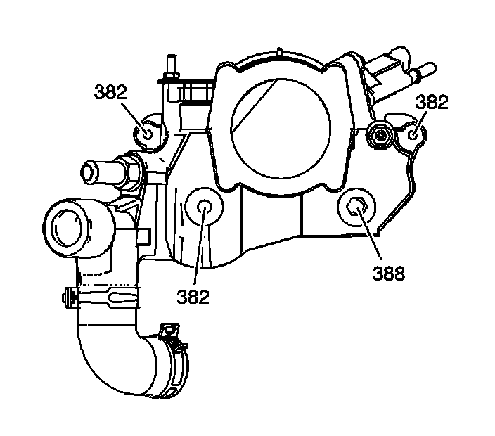
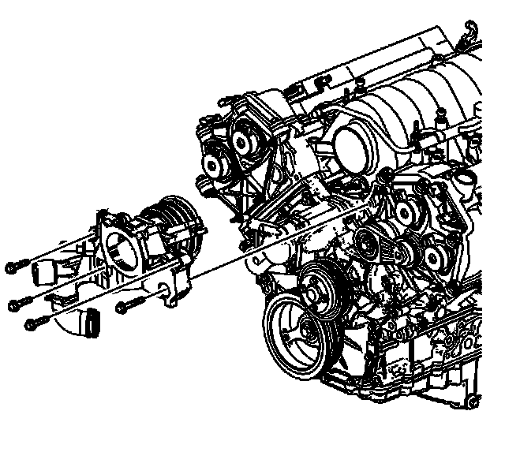
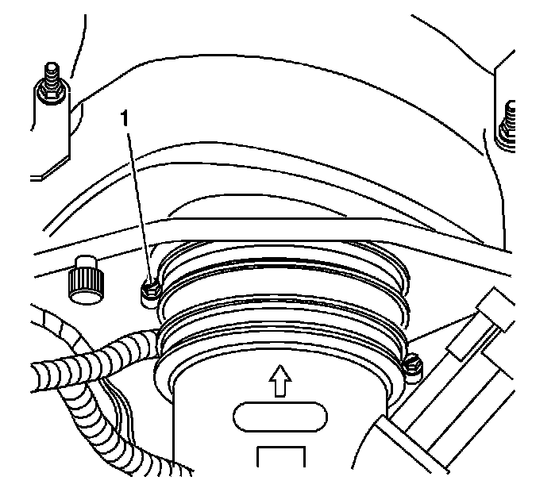
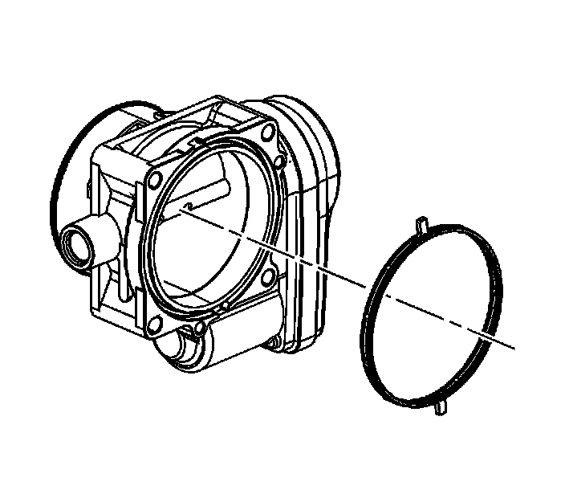
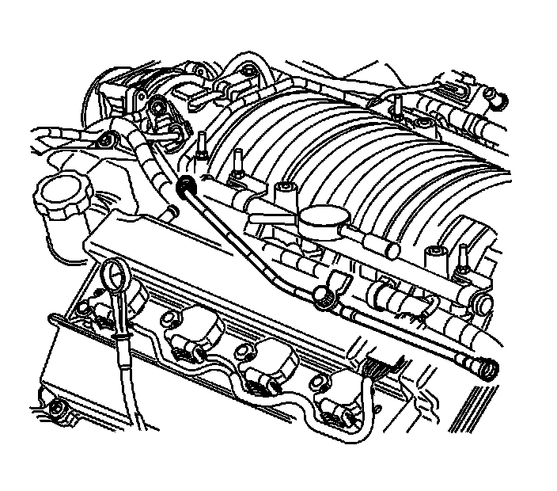

132. Water Outlet Housing Installation
Water Outlet Housing Installation

1. Install the water outlet housing bolts (382, 388) into the water outlet housing. Ensure the longest bolt is installed in the lower left position (388).
2. Install the water outlet housing gaskets to the water outlet housing.

3. Place the water outlet housing in position to the cylinder heads while installing the bypass hose onto the engine front cover.
Notice: Refer to Fastener Notice (Fastener Notice) .
4. Install the water outlet housing bolts into the cylinder heads.
Tighten the water outlet housing bolts to 25 N.m (18 lb ft).
5. Place the bypass hose clamps into position.

6. Ensure that the plenum duct is fully attached to the front of the intake manifold.
Tighten the plenum duct clamp (1) to 2.25 N.m (20 lb in).

7. Install a NEW throttle body gasket.

8. Install the throttle body to the water outlet.
9. Install the throttle body bolts.
Tighten the throttle body bolts to 10 N.m (89 lb in).

10. Install the evaporative emission (EVAP) purge valve tube onto the EVAP purge solenoid.